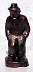
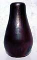
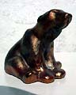
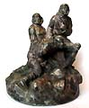

An Introduction to Danish Ceramics and Potters
IV
Søren Kongstrands Keramiske Værksted,
Esbjerg (1907-1919)
Søren Kongstrand (1872-1951) var en succesfuld isenkræmmer
med en stor interesse for keramik.
Som autodidakt keramiker etablerede han sit keramiske værksted
i 1907. En håndfuld dygtige keramikere blev ansat. Søren
Kongstrand måtte simpelthen afprøve sine ideer og evner
som keramiker.
Også nevøen Jens Pedersen (1890-1956) blev ansat og
blev oplært som keramiker.
Søren Kongstrand og Jens Pedersen arbejdede
sammen i Kongstrands keramiske værksted. Kongstrand med visionerne
og kreativiteten og Pedersen som den flittige drejer.

I 1911 havde Kongstrands Værksted sit gennembrud
på Charlottenborg.

Pressemærker: SK Søren Kongstrand; JP
Jens Pedersen
Part 1 > Jens
Michael Andersen
Part 2 > L.Hjorts Terracotta
Factory, Roenne, Bornholm
Part 3 > Soeholm, Roenne on
Bornholm
Part 4 > P. Ipsens Enke, Copenhagen
Part 5 > Kongstrands Pottery,
Esberg
Part 6 > Potteries and Potters
around Horsens
Part 7 > - The Turn of
the Century
Article kindly supplied by Tove Jespersen Klitgaarden
Antique & Ceramics, Denmark. www.Klitgaarden.net
e-mail: Klitgaarden@tdcadsl.dk
More Articles |
{kind=link}
{kind=link}
{kind=link}
{kind=link}
{kind=link}